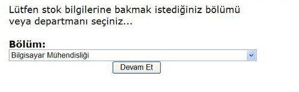
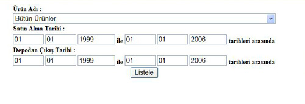

Herhangi bir bölümdeki mallarla ilgili bir sorgu yapýlacaksa öncelikle bölüm seçilip sonra "Devam Et" tuþuna basýlýr. Bundan sonra ise bu bölümdeki mallarla ilgili bir sorgu sayfasý açýlýr.

Sorgu sayfasý þu þekildedir:

Ayrýntýlarýný gördüðünüz mallar ile ilgili girebileceðiniz alanlar þunlardýr:
 Ürün Adý
Ürün Adý
Buraya bir ürün adý girildiðinde sadece o ürüne özgü iþlemler ekrana getirilir.
Satýn Alma Tarihi
Buraya bir zaman aralýðý girildiðinde sadece o zaman aralýðýnda alýnan ürünleri ekrana getirir.
Depodan Çýkýþ Tarihi
Buraya bir zaman aralýðý girildiðinde sadece o zaman aralýðýnda depodan çýkan ürünleri ekrana getirir.